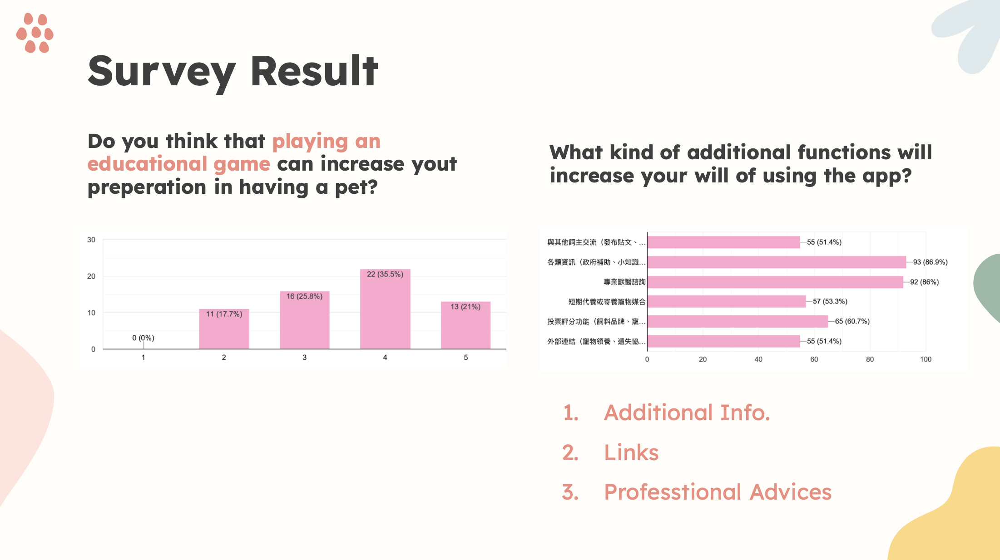
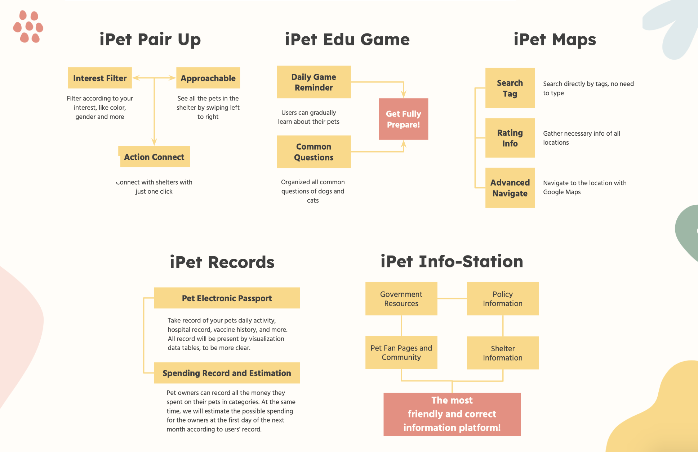
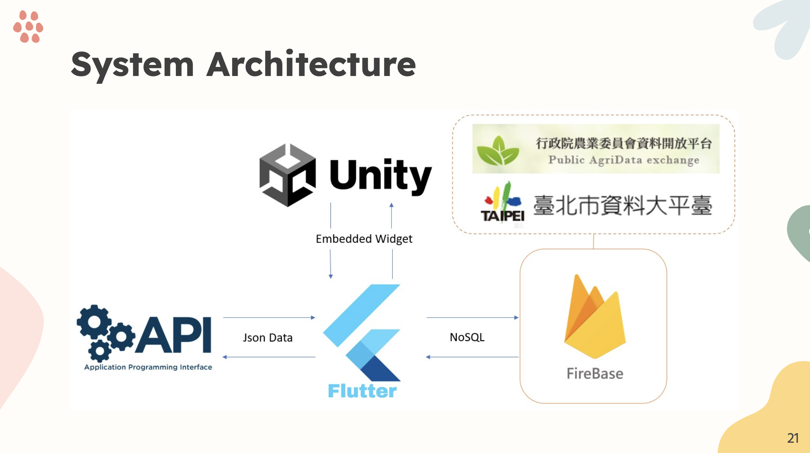
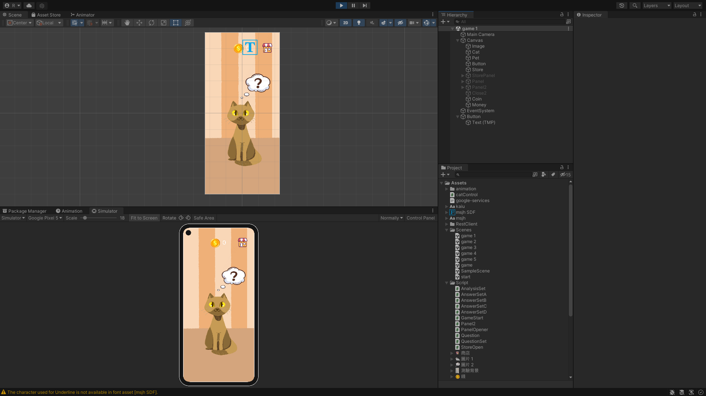

My Role
UI Designer + Game Designer (+ Developer)
Tools
Figma, Procreate, Flutter, Android Studio, Unity 2D
Timeline
2022/03 - 2022/12
Brief
iPet is an one-stop mobile application, dedicated to make pet owners' lives more easier. First of all, iPet allows users to paired up with shelter animals and find their loved ones. Owners can also build up their understandings about their pet through a well-designed educational game. Then, with functions customized for pet owners to lead their lives convenient like maps, records, and info-station, owners can indeed enjoy their lives with their dearest pets.
Goals
1. We hope that with our app, people will be more willing to adopt stray cats and dogs.
2. The educational game includes a lot of frequently asked questions, we hope that people can learn the knowledge effortlessly and take good care of their pets.
3. With the functions that is designed to make owners' lives more easier, we want to create a more convenient life for all pet owners by our well-designed funcitons and become their best partner.
Challenges
1. We have to know more about how shelter adoption works and what can we afford them.
2. In order to fit the current and future pet owners' needs, we need to know more about their daily lives with their pets.
3. The questions and the answers in the game have to be correct information, and the game design have to be attracting.
Research
To understand our potential users, current and future pet owners, we designed a survey to get some insights and to make sure our design path was right.
At the same time, we made an interview with the officer from Taipei City Animal Protection Office, to know more about the current condition of stray animal shelter
and the process of adopting the cats and dogs.
Survey
In the survey, we asked the participants if having an educational game can help them be more prepared with having a pet. Also, we wanted to know what kind of function were they expecting and make good design for them.
Interview
We had a close interview and actually went to the city's animal shelter with the officer. We told him about the project we
wanted to work on and asked for his advice.
As for the gamimg part, the officer said that the game is helpful for users to build up their understanding and make good preparations before having a pet.
Since we also wanted to help raise people's awareness of adopting pets instead of buying, we also wanted to know want kind of help can we provide.
Sadly, there is no centralized adopting platform for all shelters and the process is way more complicated, so all we can do is to help share the information about the shelter cats and dogs, and
give people clear direction to contact with shelters themselves. We was really confused and had a lot of discussion with the officer.
Main Functions
With a lot of researching and discussing, we finally decided what to do. Since our main goal was to make good care of pets, the five functions cater to different aspects and can surely benefit all pet owners.
Interface Design
To provide a more accurate guide for my fellow developers, I designed the interface of the app.
As the main goal of the app is to provide a convenient life, I tried to make the user flow and the steps as simple as possible.
Coding
With partners good at coding, I wasn't the main developer. But I was still able to help them build some of the UI designs up with Dart. Moreover, I collected and organized the resources for "info-station", and also programmed the interface and the functions.
Game Design
To make the game more appealing and interesting, all the pictures and the characters were drawn by me! We used Unity as our gaming platform and then combined the game through Unity-Flutter Widget in order to run in the app. With Unity, I made all of the animal animations and the interactions. My teammate made the questions and answers pop out. We worked together and finally made the game.
Final Result
We asked our targeted users to tested the functions and then modified according
to their suggestions. They gave our application a high recommendation and said that they would definitely tried it out.
The final result is as the following video.
Reflection
The project was a success since we won third place and the popularity award in the competition!
The app combines a lot of things and it definitely built my team-working skills to a whole new level.
First of all, I realized the importance of clear delivery can help improve the efficiency. The member who was responsible
for programming seemed to not understand my UI design at first, so he didn't make the interface according to my design. So I have to
tell him the reason of my designs and asked him to make some changes to his result.
Secondly, constructing a project this big means that great time management is a must. We wasn't going really well at the beginning,
so the time schedule was pretty much ruined. We quickly adjusted our developing steps and redistributed our works. Luckily,
with our hard work and close cooperation, we then sticked to our new schedule and finished the project on time!
More Projects...